Manual do Movi Exporter
Como extrair, mês a mês, o histórico de rastreamento dos seus veículos em planilha.
Visão geral
O Movi Exporter conecta na sua conta Wialon e gera, em planilha, todas as posições registradas dos seus veículos num mês — opcionalmente enviando os arquivos para uma pasta do Google Drive.
- Um computador com Windows.
- Usuário e senha da Wialon, para gerar o token de acesso (passo a passo).
- Opcional: as credenciais do Google Drive, se quiser envio automático.
A janela do app
Tudo acontece em três telas, acessadas pelo menu lateral esquerdo:
- Início — estado das conexões, quantos veículos foram encontrados e resumo das últimas exportações.
- Exportar — onde você escolhe o mês e gera o relatório.
- Configurações — token da Wialon, Google Drive, pasta de destino e tema.
No rodapé desse mesmo menu ficam os botões Manual (abre este guia) e Sobre, além do número da versão. Na parte de baixo da janela, uma barra mostra a última mensagem de status e a hora.
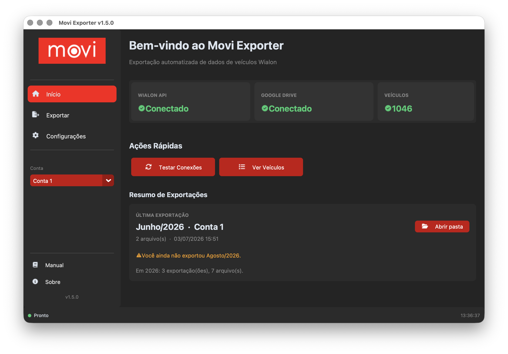
Primeiros passos
Do download ao primeiro relatório aberto. Na primeira vez, reserve cerca de 10 minutos.
1. Abrir o app
- Baixe o arquivo
MoviExporter.exee salve numa pasta sua (por exemplo,Documentos\MoviExporter). - Dê dois cliques no arquivo. Não existe instalação: ele abre direto.
- Na primeira execução o Windows mostra um aviso azul. Clique em Mais informações e depois em Executar assim mesmo.
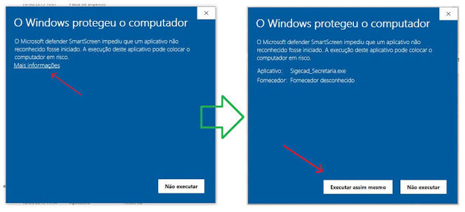
2. Conectar sua conta Wialon
Gere o token, cole no app e teste a conexão. É a única configuração obrigatória — veja Conectar sua conta Wialon.
3. Exportar um mês
Na tela Exportar, escolha o mês e clique em Iniciar Exportação. O passo a passo completo está em Exportar um mês.
4. Abrir a planilha
Ao terminar, clique em Abrir pasta para ver os arquivos gerados — veja Encontrar os arquivos.
Conectar sua conta Wialon
O token é a chave que autoriza o app a ler os dados dos seus veículos. Você gera na Wialon e cola no app.
- Seu usuário e senha da Wialon.
- O Movi Exporter aberto, na tela Configurações.
Gerar o token na Wialon
- Em Configurações, localize a seção Wialon API — Conta 1.
- Clique em Gerar. O navegador abre a página de login da Wialon.
- Entre com seu usuário e senha e autorize o acesso.
- Depois do login, olhe a barra de endereços do navegador: o token é a sequência longa que vem logo depois de
access_token=. - Selecione e copie essa sequência (até o próximo
&, se houver).
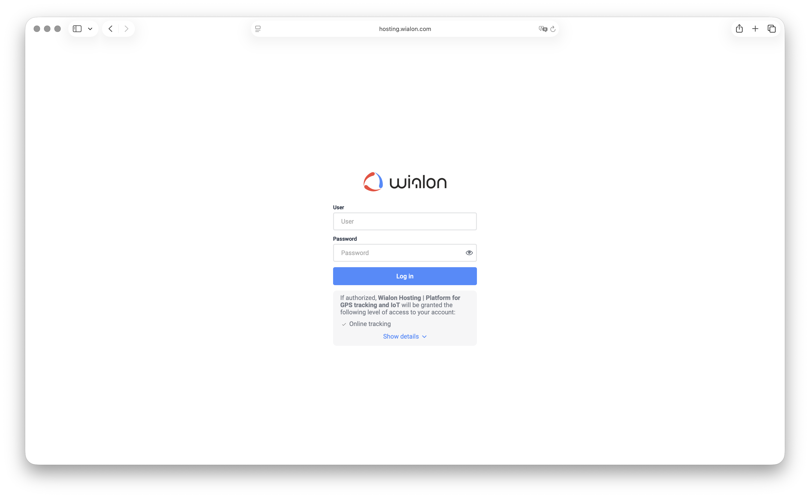
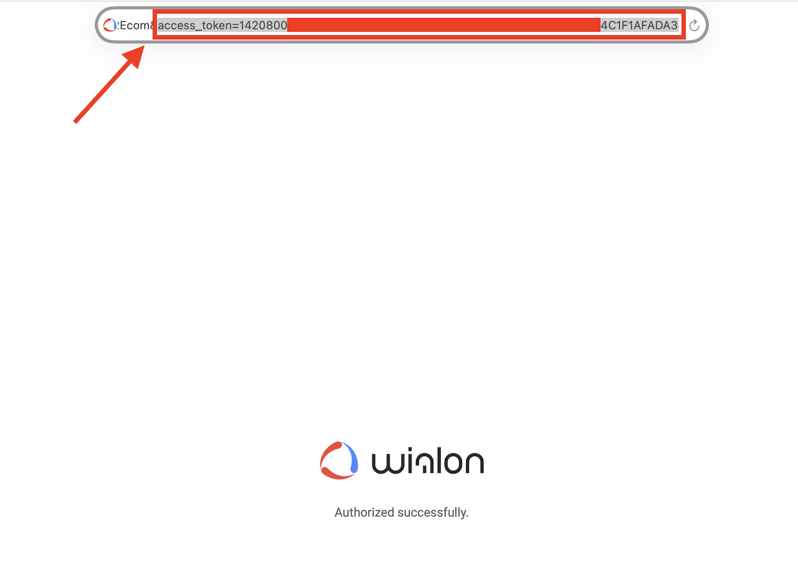
access_token=Salvar e testar no app
- Volte ao Movi Exporter e cole o token no campo Token. O botão com o ícone de olho mostra ou esconde o que você colou.
- Clique em Salvar.
- Clique em Testar.
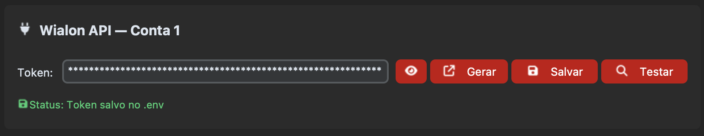
O que cada status significa
| Mensagem | Significado |
|---|---|
| sem token configurado | O campo está vazio. Gere e cole o token. |
| Não testado — clique em Testar | Há um token salvo, mas ele ainda não foi verificado. |
| Token salvo com sucesso | O token foi gravado. Falta clicar em Testar. |
| Testando conexão... | O app está verificando o token com a Wialon agora. |
| Conectado como "…" | Tudo certo: o app já fala com a Wialon. |
| Falha — … | A Wialon recusou o token. Veja Resolver problemas. |
N/D e o resto do relatório funciona normalmente.
Adicionar uma segunda contaOpcional
Se seus veículos estão divididos em duas contas Wialon, o app trabalha com as duas, uma de cada vez.
- Em Configurações, vá até a seção Wialon API — Conta 2.
- Repita o mesmo processo da Conta 1: Gerar, colar, Salvar e Testar.
- Feche e abra o Movi Exporter.
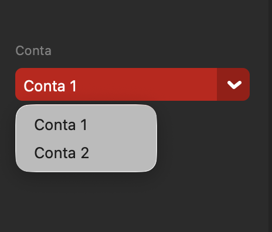
A conta escolhida vale para todas as telas: a tela Início testa a conexão daquela conta e a exportação usa os veículos dela. Os arquivos de cada conta ficam em subpastas separadas no seu computador (Conta 1 e Conta 2) — veja Encontrar os arquivos.
Enviar para o Google DriveOpcional
Com o Drive configurado, cada exportação sobe os arquivos para uma pasta sua, organizados por mês.
- O arquivo
client_secrets.json, que autoriza o app no Google. Peça para o suporte (veja Pedir ajuda) e salve na mesma pasta doMoviExporter.exe. - Uma pasta criada no seu Google Drive para receber os relatórios.
Descobrir o ID da pasta
- Abra o Google Drive no navegador e entre na pasta de destino.
- Olhe a barra de endereços:
drive.google.com/drive/folders/1AbCdEf… - Copie o trecho que vem depois de
/folders/. Esse é o ID da pasta.
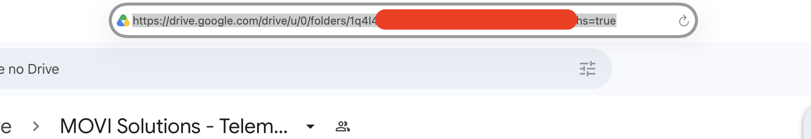
/folders/Configurar no app
- Em Configurações, vá até a seção Google Drive.
- Confira se em Credenciais aparece Encontrado, em verde. Se aparecer "Não encontrado", o
client_secrets.jsonnão está na pasta do.exe. - Cole o ID no campo ID da pasta no Drive.
- Clique em Salvar alterações, no rodapé da tela.
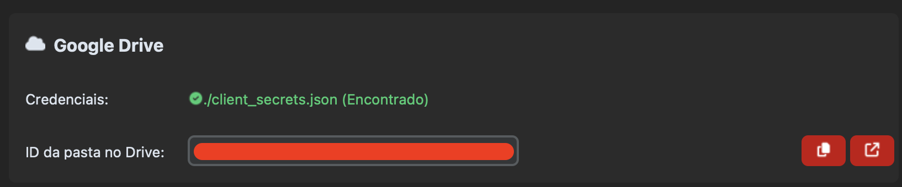
A autorização do Google
Na primeira vez que uma exportação enviar arquivos, o navegador abre pedindo que você entre na conta Google e autorize o app. Isso acontece só uma vez: depois o app guarda a autorização e envia sozinho.

Onde os arquivos aparecem no Drive
Dentro da pasta que você indicou, o app cria uma subpasta por mês, no formato AAAA-MM — por exemplo 2026-04. Todos os arquivos daquela exportação vão para lá.
Conta 1 e Conta 2 acontece só no seu computador. No Drive, tudo cai na pasta do mês. Como o nome de cada arquivo tem a placa e o horário da exportação, os arquivos não se sobrescrevem — mas ficam misturados.
Para de fato enviar, marque Upload para Google Drive na tela de exportação. Um arquivo com nome igual a outro já existente na pasta é substituído pela versão nova.
Exportar um mês
É a tarefa principal do app: escolher um período e gerar as planilhas.
- Token configurado e testado (como fazer).
- Se usa duas contas, confirme qual está escolhida no seletor Conta, no menu lateral.
Gerar o relatório
- No menu lateral, clique em Exportar.
- Escolha o Mês e o Ano. O app já vem com o mês passado selecionado, que costuma ser o que você quer.
- Escolha o Formato:
xlsx(Excel, o padrão),csvouboth(os dois). - Revise as Opções — o que cada uma faz está em Opções de exportação.
- Deixe Todos os veículos marcado, ou escolha veículos específicos (veja abaixo).
- Clique em Iniciar Exportação e confirme o resumo que aparece.
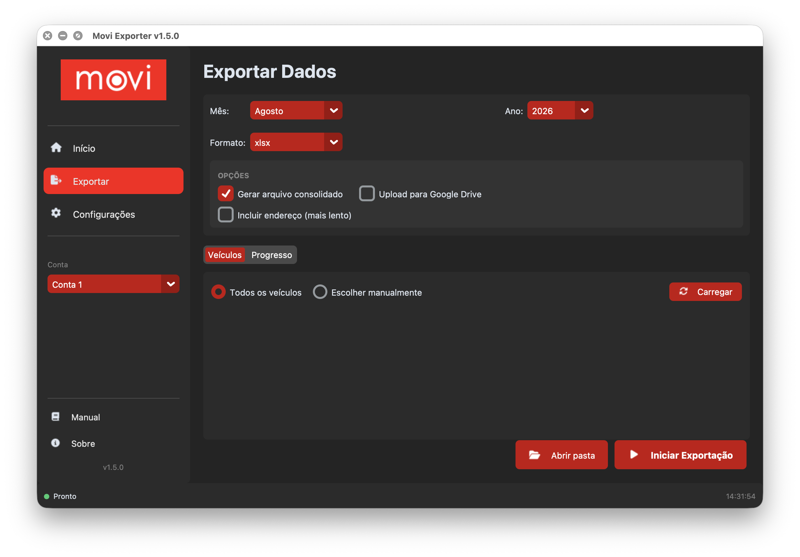
Escolher veículos específicos
Marque Escolher manualmente e clique em Carregar. A lista chega com nenhum veículo marcado.
- Use o campo de busca para filtrar por nome, placa ou ID.
- Marcar todos e Limpar todos agem sobre o que está no filtro no momento — com uma busca ativa, os botões passam a se chamar "Marcar filtrados" e "Limpar filtrados".
- O contador ao lado mostra quantos estão selecionados.
- Em frotas grandes, a lista carrega mais veículos conforme você rola.
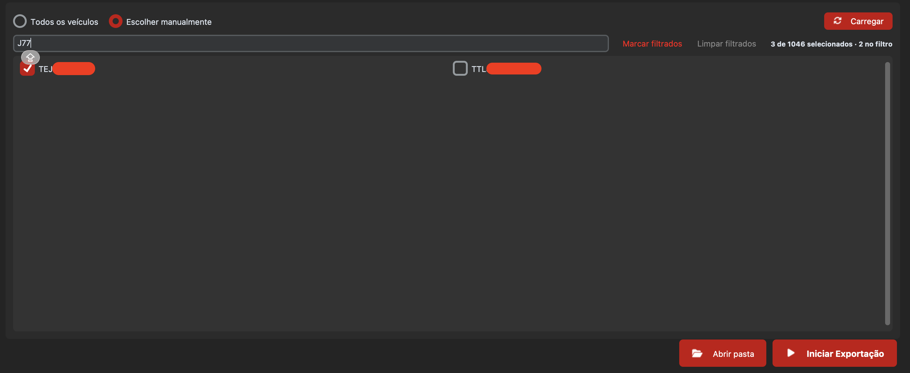
Acompanhar e parar
Ao iniciar, a tela muda para a aba Progresso, com uma barra e o registro do que está acontecendo, veículo a veículo. Você pode voltar à aba Veículos a qualquer momento — a exportação continua.
O botão principal vira Parar. Ele encerra depois do veículo atual, mantém os arquivos já gerados e não cria o consolidado nem envia nada para o Drive.
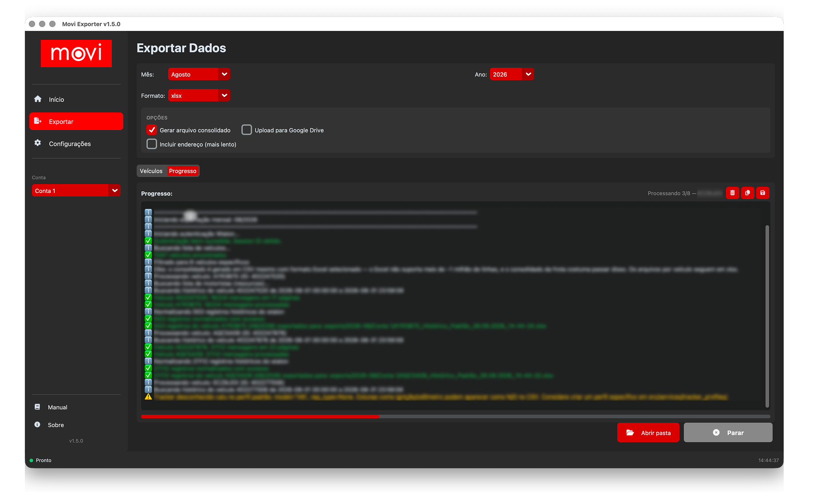
Como a exportação termina
| No registro aparece | Significa |
|---|---|
| EXPORTAÇÃO CONCLUÍDA | Deu certo. Logo abaixo vêm quantos veículos, quantos registros e a lista de arquivos gerados. |
| NENHUM DADO DISPONÍVEL PARA O PERÍODO | Os veículos foram consultados, mas não havia dados no mês. Veja Resolver problemas. |
| EXPORTAÇÃO CANCELADA | Você clicou em Parar. Os arquivos dos veículos já processados continuam na pasta. |
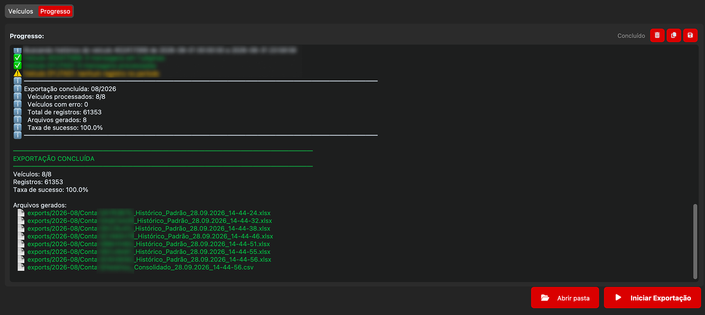
Encontrar os arquivos
Os relatórios ficam no seu computador, organizados por mês — e também no Drive, se você marcou o envio.
Abrir a pasta
Clique em Abrir pasta, na tela Exportar (ou no bloco de resumo da tela Início). O explorador do Windows abre na pasta do mês selecionado.
Como as pastas são organizadas
- Uma conta:
exports\2026-04\ - Duas contas:
exports\2026-04\Conta 1\eexports\2026-04\Conta 2\

Como os arquivos são nomeados
| Arquivo | O que é |
|---|---|
| RJG0H60_Histórico_Padrão_15.04.2026_15-31-19.xlsx | O relatório de um veículo. O começo é a placa; a data e a hora são de quando você exportou. |
| RJG0H60_402231059_Histórico_Padrão_… | O mesmo, com o número da unidade na Wialon incluído. Acontece quando duas unidades têm a mesma placa cadastrada, para um arquivo não sobrescrever o outro. |
| Histórico_Consolidado_15.04.2026_15-31-19.csv | Todos os veículos num arquivo só, se você deixou Gerar arquivo consolidado marcado. |
xlsx, o arquivo consolidado é gravado em CSV: o Excel não abre planilhas com mais de um milhão de linhas, e o consolidado de uma frota costuma passar disso. Os arquivos por veículo respeitam o formato escolhido.
Abrir no Excel
Arquivos .xlsx abrem com dois cliques, prontos.
Arquivos .csv usam vírgula para separar as colunas, enquanto o Excel em português espera ponto e vírgula — por isso um CSV aberto com dois cliques costuma aparecer com tudo espremido numa coluna só. Para abrir certo, use o Excel em Dados → Obter Dados → De Texto/CSV, escolha o arquivo e selecione Vírgula como delimitador. Se for só para leitura, prefira exportar em xlsx.
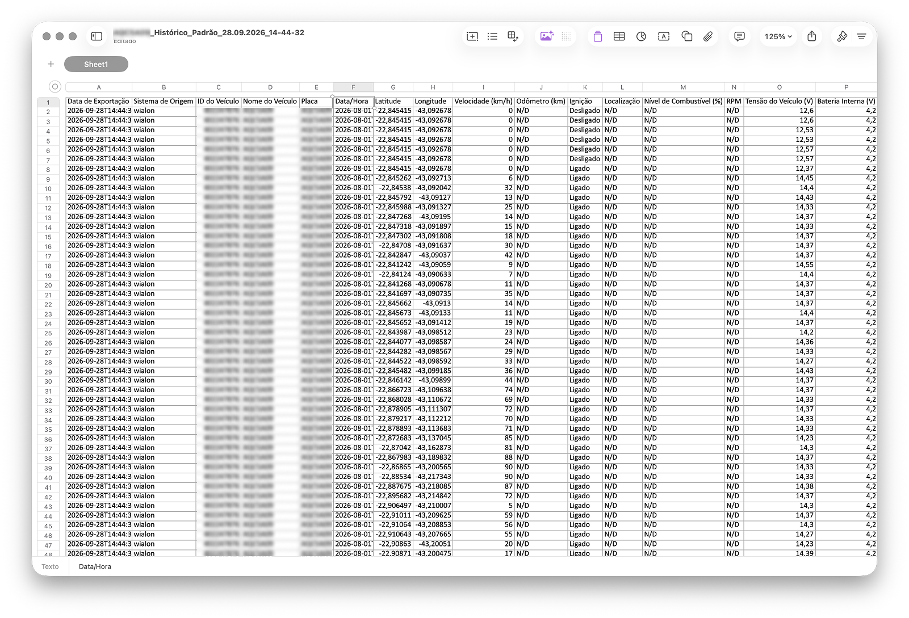
Acompanhar pela tela Início
A tela Início responde três perguntas: está conectado? quantos veículos? o que já foi exportado?
Os cartões de status
- Wialon API — "Conectado" em verde quando o token está funcionando.
- Google Drive — "Conectado" ou "Não configurado" (amarelo), o que é normal se você não usa o envio automático.
- Veículos — quantos veículos a conta selecionada tem.
O botão Testar Conexões refaz essa verificação. O botão Ver Veículos abre a lista completa com ID, nome e placa — ele fica disponível assim que a conexão é confirmada.
Resumo de Exportações
Logo abaixo, o app mostra a última exportação feita (mês, conta, quantidade de arquivos e data), com um botão para abrir a pasta. Se algum mês fechado ainda não foi exportado, aparece um aviso em amarelo, e no fim vem o total do ano.
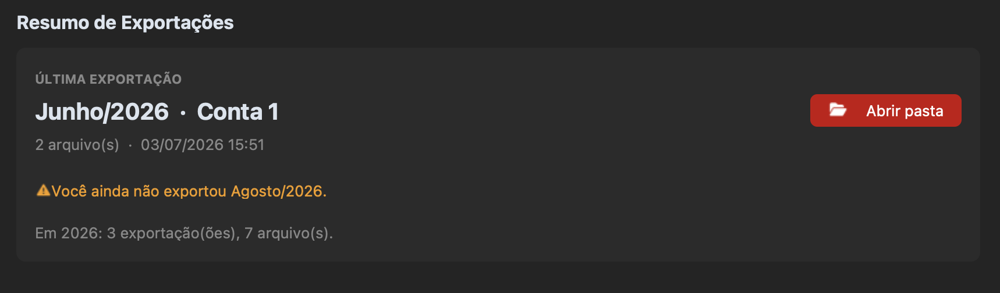
Colunas do relatório
Cada linha é uma posição registrada do veículo: onde ele estava, quando, e o que os sensores mediram naquele instante. As colunas saem sempre nesta ordem.
| Coluna | O que é |
|---|---|
| Data de Exportação | Quando este arquivo foi gerado pelo app. |
| Sistema de Origem | De onde vieram os dados (Wialon). |
| ID do Veículo | Número que identifica a unidade na Wialon. |
| Nome do Veículo | Nome como cadastrado na Wialon. |
| Placa | Placa cadastrada na Wialon. |
| Data/Hora | Momento em que a posição foi registrada. |
| Latitude | Coordenada norte/sul do ponto. |
| Longitude | Coordenada leste/oeste do ponto. |
| Velocidade (km/h) | Velocidade naquele instante. |
| Odômetro (km) | Distância acumulada pelo veículo, em quilômetros. |
| Ignição | Ligado ou Desligado. |
| Localização | Endereço do ponto. Só vem preenchida se você marcar Incluir endereço (mais lento). |
| Nível de Combustível (%) | Combustível no tanque, em veículos com esse sensor. |
| RPM | Rotação do motor. |
| Tensão do Veículo (V) | Bateria do veículo (de 12 V a 28 V, conforme o modelo). |
| Bateria Interna (V) | Bateria de reserva do próprio rastreador (cerca de 4 V). |
| Horas de Motor | Horímetro: total de horas que o motor funcionou. |
| Motorista | Nome do motorista, pelo cartão RFID lido no veículo. |
0 são leituras de verdade, não ausência de dado.
Opções de exportação
O que cada campo e caixa da tela Exportar muda no resultado.
| Opção | Padrão | O que faz |
|---|---|---|
| Formato | xlsx | xlsx abre direto no Excel; csv é um texto separado por vírgulas; both gera os dois. |
| Gerar arquivo consolidado | Marcado | Cria, além dos arquivos por veículo, um único arquivo com a frota inteira. Sempre em CSV. |
| Upload para Google Drive | Desmarcado | Envia os arquivos gerados para a pasta do mês no Drive. Exige o Drive configurado. |
| Incluir endereço (mais lento) | Desmarcado | Preenche a coluna Localização com o endereço de cada ponto. Deixa a exportação bem mais demorada. |
| Todos os veículos | Marcado | Exporta a frota inteira da conta selecionada. |
| Escolher manualmente | — | Mostra a lista para você marcar veículos específicos. |
Configurações do app
Além do token e do Drive, a tela de Configurações guarda três ajustes.
Diretório
Onde as pastas de cada mês são criadas. O padrão é exports, dentro da pasta do app. Use o botão ao lado para escolher outra pasta e depois clique em Salvar alterações.
Registros por página
Quantas mensagens o app busca por vez na Wialon: de 100 a 5000, sendo 1000 o padrão. É um ajuste técnico — só mexa se o suporte pedir.
Tema
Em Geral → Tema, escolha Escuro, Claro ou Sistema (acompanha o Windows). A escolha vale na hora e é lembrada na próxima abertura.
.env, na mesma pasta do MoviExporter.exe. Você não precisa abrir esse arquivo — mas não o apague, ou terá de configurar tudo de novo. Ao trocar de computador, leve-o junto com o .exe.
Atualizações e versão
O app avisa sozinho quando sai uma versão nova.
Ao abrir, o Movi Exporter verifica se existe atualização. Havendo, aparece a janela Nova Versão Disponível!, com a versão atual e a nova. Clique em Baixar e Instalar para atualizar na hora, ou em Depois para seguir usando a versão atual.
O botão Sobre, no rodapé do menu lateral, mostra a versão instalada e permite verificar atualizações quando você quiser. O número da versão logo abaixo abre a lista de novidades de cada versão.
Resolver problemas
Procure pelo que você está vendo na tela.
O Testar diz "Falha"
O token foi recusado pela Wialon: pode ter sido copiado pela metade, ter perdido a validade, ou a conta não ter permissão para o que o app pede.
O que fazer: gere um token novo (passo a passo), com atenção para copiar a sequência inteira depois de access_token=, sem espaços. Cole, clique em Salvar e teste de novo. Se falhar outra vez, confira se consegue entrar normalmente no site da Wialon com esse usuário.
A exportação terminou sem dados
O app conversou com a Wialon, mas ela não devolveu nenhuma posição para aquele mês.
O que fazer: confirme o mês e o ano escolhidos; teste um mês mais recente; e verifique se os veículos estavam ativos no período. Se o mês é antigo, veja o item seguinte.
Faltam dias no começo do mês
A Wialon guarda o histórico por um tempo limitado, definido no plano da conta (90 dias, por exemplo), e apaga o que passa disso — todo dia um pedaço a mais some. Não é o app que deixou de buscar.
O que fazer: exporte cada mês logo depois que ele fechar. Para meses antigos, o arquivo que você já exportou é a única cópia dos dias apagados; guarde-o. Se precisa de um histórico mais longo, fale com quem administra sua conta Wialon sobre o período de retenção do plano.
A coluna Motorista está toda como N/D
Ou nenhum cartão foi passado nos veículos, ou o token não tem permissão de ver motoristas, ou os cartões estão sem o campo Código na Wialon.
O que fazer: na Wialon, confirme que cada cartão RFID tem o Código preenchido. Depois gere o token de novo marcando também a permissão de ver motoristas. O resto do relatório funciona normalmente mesmo sem essa coluna.
A coluna Localização está vazia
A busca de endereços é opcional e vem desmarcada, porque deixa a exportação bem mais lenta.
O que fazer: marque Incluir endereço (mais lento) antes de iniciar. Pontos sem endereço conhecido continuam saindo como N/D, mesmo com a opção marcada.
Os arquivos não apareceram no Google Drive
Ou a opção de envio não estava marcada, ou falta configuração, ou a autorização do Google não foi concluída.
O que fazer: confira se Upload para Google Drive estava marcado; em Configurações, se Credenciais mostra "Encontrado" e o ID da pasta no Drive está preenchido e salvo. Se o navegador abriu pedindo autorização e você fechou, rode a exportação de novo e conclua a autorização. No fim do registro da exportação, a linha "Upload: x/y arquivos" mostra o que subiu.
O Windows bloqueou o app
O programa não tem certificado de desenvolvedor pago, então o Windows mostra um aviso na primeira execução.
O que fazer: clique em Mais informações e depois em Executar assim mesmo. Se o antivírus tiver colocado o arquivo em quarentena, libere-o ou fale com o suporte.
Um arquivo veio com um número no nome
Duas unidades estão cadastradas com a mesma placa na Wialon. O app acrescenta o ID da unidade para um arquivo não sobrescrever o outro.
O que fazer: nada, do lado do app — os dois relatórios estão corretos. Se isso se repete, vale revisar o cadastro das placas na Wialon.
A exportação está demorando muito
O tempo cresce com o tamanho da frota, o movimento do mês e, principalmente, com a opção de incluir endereço.
O que fazer: se não precisa da coluna Localização, desmarque Incluir endereço (mais lento). Para uma consulta pontual, use Escolher manualmente e exporte só os veículos que interessam. Se precisar interromper, o botão Parar preserva o que já foi gerado.
Pedir ajuda
Quando nada acima resolver, mande três informações — com elas o suporte costuma identificar o problema sem precisar de acesso à sua máquina.
- O registro da exportação: na aba Progresso, clique no ícone de salvar (o terceiro, à direita do título) e guarde o arquivo
.txt. - A versão do app: aparece no rodapé do menu lateral e no botão Sobre.
- O mês, o ano e a conta que você tentou exportar, e o que apareceu na tela.
Envie para gabriel@itgraph.com.br.